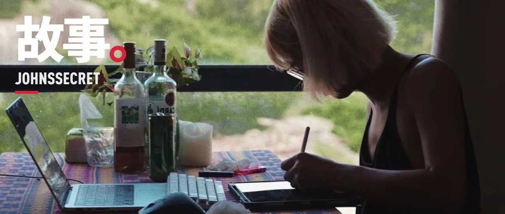

吃 得 苦 中 苦，必 然 先 入 土
原创
宛潼
约翰斯库
2022年09月06日 21:58
海南
被封在三亚的我实在是没有钱了，觍着脸跟家里要了点。
我能理解我作为一个 24 岁的人混成这个样子，没赚多少钱，没一点存款，信用卡账单上万，一点也没有资格来劝你不要吃苦，但事实是我确实就这么做了。
但让我想到要写东西来说这件事，其实是源自于我妈的一段话和一个梦。
前不久，我妈给还被封在三亚的我发了一大段消息，跟我说要踏实过日子，而我现在不是去长沙就是去三亚，年青人要有上进心，得努力工作脚踏实地，富足和成功是靠努力争取的，你要加油。她现在也无能为力，没法给我担当事情了，要不就信个神过个平安稳妥的生活呗。
她说她「心里在滴血」，我讲实话挺难受的，毕竟是自己的亲妈。但这里有个奇怪的点是，我难受的地方在于她并没有平等地掌握家里的经济权力，而不是她「我实在帮不了你了儿子」……她确实还这么叫我。
不过，在希望我「回归正常」这个点上，我爸妈的统一战线就非常牢固。7 月回家二次出柜的时候，他俩老人家就在我旁边声泪俱下地和我说，你就不能把头发剪了安安稳稳找个工作，好好找份工作踏踏实实找个人结婚生孩子吗？
接着他们举出了各种身边朋友的孩子的例子，不过我现在也都忘得一干二净了，倒是有一个我记得很清楚。我爸问我你记得某某阿姨她儿子吗？我说记得。我爸讲，他前几年的时候也跟你一样留长发像个烂仔，整天混，但是后来人家谈了个对象之后也剪了短发，安稳下来回去上班。前不久人家结婚了，那个阿姨还请我们去他婚礼，他短发穿个西装的样子，牵着自己的新娘走红毯，不知道多帅气。你看，人家还懂得回头是岸，你这么大个人该想明白了。
我对这个印象特别深，大概是因为这个故事实实在在地在我的雷区里躺着滚炸了一片。我爸给我讲完的时候可能觉得他都这样哀求我了，我还会回头是岸，结果没想到的是，我直接在朋友圈跟所有亲戚朋友公开出柜。
小时候我喜欢挑食，不喜欢吃青菜，也不喜欢吃番薯，喜欢吃煎炸和咸香的东西……问题是哪个小孩会不喜欢吃啊？但在小时候根本没有肯德基和麦当劳自由的年岁里，经常碗里被塞满青菜和番薯才是常态。稍微长大一点之后，当我开始表达表达说我不想吃某种菜（比如我真的不喜欢吃的番薯）的时候，我爸就是一脸「你是想反了天了」的表情，怒斥我「有得吃还嫌三嫌四」。
一般在斥责之后，就是漫长的忆苦思甜教育：讲述他们过去自己的生活多么艰难，冬天光着脚出去砍柴，夏天顶着烈日到地里种田，还要背着弟妹啥的，只有过年才能吃顿肉，平时能吃到番薯是多么幸福且不易的事情，向我传递「吃得苦中苦方为人上人」的人生理念。
现在不挑食了，好养活
讲上面几个事情的原因，其实是给我说的「苦」找两个方向：一个没法按照自己想要的样子去开心地活，一个是铺天盖地的声音都在告诉你要经历苦难才能成就自己。
先说后面这句话。
讲道理，小时候其实对「忆苦」这件事情根本没有太多感觉，直到长大读了历史和文学，才能明白这件事的意义在哪。但书读得多了，就很容易发现过去父母长辈的那些劝诫充满了逻辑漏洞。比如，纪念苦难就一定要让自己也经历一遍父母所经历的苦难才能被赋予意义？好像不对啊。
另外，成为人上人真的要吃苦吗？举个国外的例子吧。中学历史课上讲到文艺复兴和启蒙运动的那一章里，你大概听过一个叫「赎罪券」的东西：只要教徒「自愿捐献」的银钱投进箱子里发出「叮」一响时，他就可以被赦免不下地狱了。不过王室和教廷是例外的，他们和他们的后代生下来就是「被上帝选中的天之骄子」，生来就是人上人，当然不需要买赎罪券。那这种赎罪券是谁买呢？买赎罪券的钱又去哪了？不说太多了。
历史总会告诉我们一些什么经验，但人类一直都在历史的车轮里循环往复，无非就是换个套路，或者穿个高尚的衣服来掩盖一些不可言说的目的。毕竟过去人类的野蛮行径确实不光彩，所以到了所谓「文明社会」之后，就只能换一种形式来劝诫人要吃苦，因此现在我们有了一个更好的词来形容这个事情 —— 画饼。
有一种冷，叫你妈觉得你冷。有一种人生，叫你爸妈觉得你应该过的人生。
想到了一个奇怪的梦，当时醒来我发现哭得挺厉害，就赶紧
拿
电脑记录了下来。
不过说到底还是个梦，很多场景和事情都没有逻辑可言，所以不需要关注事情的本身，而是要想清楚这些事情背后指向的一个含义。
我梦见我在一个像是教堂的场所里。就叫它教堂吧，应该是修建在比较高的地方，要走很多层的阶梯才能下到地面。大概是下午的时间，我和一些朋友在里面做绳缚艺术表演 —— 赤身裸体的我被捆在半空中，阳光穿过打开的珐琅玻璃窗，照在了我下垂的乳房和没有切去的男性生殖器上。
我不记得缚手的容颜，只记得我与她对视，拥抱，亲吻。
但这时，我的父母和一些亲戚突然出现在了窗外。我瞬间汗毛矗立，拼命地地扭过头去害怕被他们发现。然而，我一丝不挂、堕落、变态的样子，最后还是完整地出现在他们的眼前。我看见我妈当场崩溃怒骂，却听不见一丝声音。而我爸则是拿出手机，在窗外拍下我的堕落的样子，但不知道为什么我却能听见他心里的话，「来，我要让世人都看看，你有多肮脏，多龌龊」。
缚手给我解开了绳子，我穿好衣服跑了出去。他们早已离开，我在无边的阶梯上朝着地面狂奔，最终在一个像是景区入口的栅栏处遇见了他们。我在里面，他们在外面。妈妈还在哭，我爸和其他亲戚则是朝我冲来，用力地推着栅栏对我怒骂，仿佛在冲破这道阻碍之后，就要进来将下贱的我撕碎。
我只能拼命跑，跑向教堂，看着他们被挡在入口的地方，回头看着他们的样子渐渐消失。依稀能听见他们给我留下的最后一句话，「从今以后，你永远没有我们和这个家」。在那一刻我不知道我带着什么心情继续向前跑着，没有失落，却在流泪，渐渐发现自己脚步越来越轻盈，逐渐地长出了翅膀。
重新回到教堂前的楼梯时，我抖动着羽翼未丰的翅膀，继续飞奔着往上跑去，嘴里大喊着「Who tm care」。在冲上楼梯的那一瞬间，我发现我有好多好多想做的事情，数不完想去的地方，见不完的朋友，仿佛那是一个最终奔向自由的路。
不知道什么时候，我又重新回到了那个教堂里，珐琅色的玻璃也被打破成碎片洒在了地上。我和缚手相视而笑，阳光终于可以不再遮遮掩掩地照进来。很多认识的不认识的人聚集到了窗外，他们看着我一丝不挂的身体，并不纤细但充满曲线的腰，丰满但下垂的乳房，丛林遍布的阴茎和肌肉线条清晰的四肢，脸上都带着笑，都在说着鼓励我的话语。
忽然醒来。
这种猎奇的生命体验必然不会每个人都一样。但上班摸鱼的时候你肯定会想过这样一件烂大街但确实值得思考的事：为什么我现在要过着被安排好的人生？为什么我不敢现在就去过自己喜欢的生活？为什么别人就可以生下来比我过得好？
当然这不是告诉你现在立刻就辞职，这叫幼稚的冲动。只是想问问，除开「暴富」和「中一千万彩票」的白日梦之外，自己想要的快乐到底是什么样的。说实话，这事可能真不那么关乎钱。
当然，在「你爸妈觉得你应该过的人生」里，他们也会允许一些意外的发生，例如你是一个天才。
想起来在高三的时候，年级里有个学霸，后来考去了北大。有一次和朋友在饭堂吃饭的时候，他问我，如果你是他，你还会遵守校规吗？我说，应该还会吧。朋友表示我可真傻，他要是有那样的成绩，他肯定无视学校里那些无聊的校规，什么五条高压线都是不存在的，谈恋爱点外卖翘课带手机一样不落。
他去北大，我去北师大（珠），我们都有美好的未来
最终，我不可能成为他，我也没可能去北大。毕竟对于我来说，高三就是需要熬过去的苦，但或许对那个学霸来说，高三反而是快乐且有意义的。因为从根本上，我们对高考的态度和目的都不一样 —— 我只想摆烂早点结束逃离这所压抑的牢笼，他享受着学习和做题的过程，顺带考了个可以去北大的好成绩。
你看哪个被采访的高考状元是愁眉苦脸跟你说学习累得要死的？
一般来说，很多「该吃苦」的话语大都来自于自己的长辈和领导，恰恰他们对应了前面说的「苦」的两种方向。
我正式走进职场是 2018 年 1 月，所以当其他同学刚开始工作半年的时候，2019 年的春节前我已经开始拿年终奖了。作为一个毕业还不到半年的小屁孩来说，一下子卡里拿到了五位数的钱，内心还是很激动。尽管自己并不是那么喜欢现在工作的内容，但在这种「巨款」的刺激下，自我感动地觉得自己或许也能爱上这个行业。说不定呢？
说不定个鬼，不喜欢就是不喜欢。到了 2019 年之后，随着公司规模扩大，每天的工作其实都在吃苦，一加班就消极怠工。老板觉得我每天机械一样干活毫无主动性，我觉得老板就给那么点钱我根本不想做。无论后来怎么画饼，互相都看对方不爽的时候，我该走还是得走，提交离职申请刚提交一会老板就秒通过了 —— 我怎么可能受得了「男人怎么会不喜欢车」这种话的？
后来算是回到了自己喜欢的行业里干了一年半。老实说，加班其实更多了，但其实没觉得自己在吃苦。自己喜欢做这些事情，还能学到东西积攒资源，我觉得这一年半的经历着实还不错。想起来有一次通宵加班，和两个逗比同事边扯淡边笑做 PPT，赶在提案前交给了客户拿到了项目，接着小睡了一会又去盯抖音项目的拍摄，直到下午三点多撑不住了才回去睡觉。
要是放以前跟我说要通宵加班，我可能直接摔桌子走人。但也没有说就很恨前老板浪费了我两年的时光啦，能找到自己喜欢做的事情其实就是好事。
当时的全司「最豪华工位」
讲道理，我真不喜欢用「卷王」这个词去描述真的在努力的人。你觉得科比凌晨 4 点起来在洛杉矶打球很辛苦，但人家未必这么觉得。你肯定记得小时候你打游戏不管打到多晚都不觉得累，几个小时一下就过去了，而你爸妈催你去写作业写半个小时不到就开始打瞌睡，一样的道理。
其实这篇稿子是在凌晨写完的大部分内容，但我真没觉得这事情苦。反而我看着每次发完稿子之后能获得一些人的认可和讨论，我能开心地蹦到天上去。就好比我现在的这台 MacBook Pro 就是写稿获奖的奖品，我收到的时候都开心死了，谁能想到我有一天也能用上苹果最新的 M1 Pro，而且还不花钱，开心死了，开心死了。
甚至在前不久，我敢把我的文章分享给家人看，朋友说「你胆肥了不少」，但根本还是因为我觉得我在做自己喜欢的事情，不管谁怎么评价都好，我还会一直干下去。
「内卷」这个词不好，本身就带有被迫性，就跟比谁更能吃苦，谁更能熬死谁一样。如果你做的事情本身就是你不那么喜欢的，那自然会有喜欢这件事的人来告诉你什么叫「卷王」。
忽然想到了二舅，但不想提二舅，造成二舅问题的是二舅自己吗？二舅是悲剧的，二舅值得同情和帮助，但二舅不值得纪念和歌颂。
写到这里我都觉得我有点营销号
那
味道了。
但是：
别吃苦别吃苦别吃苦别吃苦别吃苦别吃苦别吃苦别吃苦别吃苦别吃苦别吃苦别吃苦别吃苦别吃苦别吃苦别吃苦别吃苦别吃苦别吃苦别吃苦别吃苦别吃苦想想你喜欢什么想想你喜欢什么想想你喜欢什么想想你喜欢什么想想你喜欢什么想想你喜欢什么想想你喜欢什么想想你喜欢什么想想你喜欢什么想想你喜欢什么想想你喜欢什么想想你喜欢什么想想你喜欢什么。
白嫖的 MacBook Pro 真香白嫖的 MacBook Pro 真香白嫖的 MacBook Pro 真香白嫖的 MacBook Pro 真香白嫖的 MacBook Pro 真香！